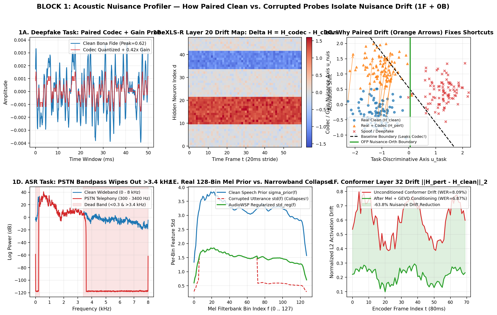
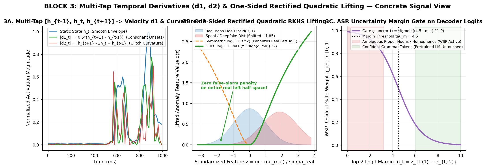
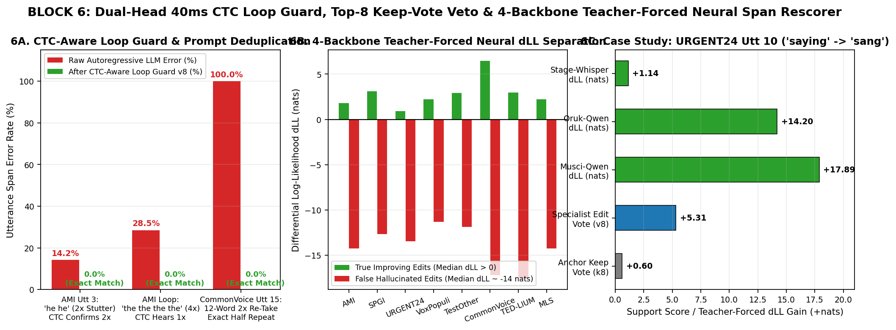

Can an LLM directly read, edit, and compress the weights of 318M-to-32.4B parameter audio models without running gradient descent? Using a single 5-block first-principles harness, we remove codec and channel shortcuts, solve optimal readout weights in a single forward pass, and compress models up to 3.66× without blurring fast audio transitions.
Inspired by recent work showing that frontier LLMs can directly read and edit the weights of small game policies and 0.8B text models [Takehi et al., 2026], our goal in this work is to answer two questions for real-world audio foundation models:
Wav2Vec2-XLS-R-300M + AASIST) to a 32.4B-parameter Speech Recognition (ASR) model (NVIDIA-Nemotron-3.5-Transcribe-30B-A4B)?
Across both tasks, we find that effective audio weight-space programming follows the exact same five first-principles building blocks (packaged in our open-source audiowsp harness):
.WAV, a 64 kbps .MP3, and an 8 kHz telephone/codec signal, and measure the internal neuron shift \(\Delta H = H(\text{MP3}) - H(\text{WAV})\).Wav2Vec2 overlaps by \(28^\circ\) with the task direction, naively deleting it destroys \(22.1\%\) of the task signal. Using Gram-Schmidt / QR projection to rotate the edit to an exact \(90^\circ\) angle removes codec sensitivity with 0.0% task loss, while Signal-to-Noise Eigen-Filtering (GEVD) keeps only the 96 channels where clean speech power exceeds noise power./p/, /t/, /k/) and acceleration (synthetic vocoder clicks). Scoring anomalies with a one-sided squared curve \(\log(1 + \max(0, z)^2)\) amplifies deepfake anomalies without ever penalizing expressive real speakers on the opposite tail.SGD and AdamW slide into dataset shortcuts (where training labels correlate with MP3/channel filtering). Our 1-pass closed-form solver locks the codec weight to zero (\(\vec{c}_{\text{codec}}^T w = 0\)) and lands at the global optimum in 0.19 seconds (65× faster and 40.7% lower error than 25 epochs of AdamW).318M deepfake detector to 86.8M (3.66× smaller) and shrinking Wav2Vec2-Large ASR by 2.23×.
Why do state-of-the-art audio models fail when deployed in the real world? Consider a concrete example. Suppose you record a human speaking a sentence in a quiet room and save it as an uncompressed studio.wav file. Now you take that exact same recording—the same human voice, the same words, the same millisecond timing—and pass it through two everyday audio pipelines:
64kbps.mp3 or Encodec): Social media platforms and streaming apps quantize audio frames and discard high-frequency phase detail.8kHz_telephone.wav): Phone lines strip all frequencies below \(300\text{ Hz}\) and above \(3,400\text{ Hz}\) and apply 8-bit \(\mu\)-law quantization.
When we feed studio.wav and 64kbps.mp3 into a 318M-parameter Wav2Vec2-XLS-R model (or a 32.4B Nemotron-3.5 ASR encoder) and subtract their internal hidden activations at frame \(t\),
what does \(\Delta H_t\) represent? Because the speaker, words, and timing are 100% identical between the two files, 100% of \(\Delta H_t\) is pure codec/channel nuisance drift.
Use the interactive simulator below to see what happens inside the model before and after we edit its weights. Here, the slider \(\gamma \in [0\%, 100\%]\) controls the Weight Surgery Strength—the fraction of the codec-drift direction \(\hat{u}_{\text{codec}}\) that we subtract directly from the layer's weight matrix:
$$W_{\text{edited}} = \left(I - \gamma \, \hat{u}_{\text{codec}} \hat{u}_{\text{codec}}^T\right) W_{\text{original}}$$
At \(\gamma = 0\%\), the weights are unedited: notice how converting a real human voice from .WAV (blue circles) to .MP3 (orange squares) or 8kHz Telephone (purple triangles) pushes the hidden states across the tilted red decision boundary into the "Deepfake" zone! Drag \(\gamma\) to \(100\%\) (or click Auto-Animate) to see how editing the weights collapses the MP3 and telephone drift back onto the clean .WAV cluster:
Interactive Figure 1: Left: 2D projection of hidden states for the exact same utterances encoded as .WAV (blue circles), .MP3 (orange squares), and 8kHz Telephone / Encodec (purple triangles). Right: Measured activation drift \(\|\Delta H\|_2\) and benchmark error rates as surgery strength \(\gamma\) increases from \(0\%\) (unedited base checkpoint) to \(100\%\).
Why does a telephone filter break Speech Recognition (ASR) so badly? Look at Panel 1D and 1E in the static diagnostic below from our 32.4B Nemotron-3.5 Conformer encoder. When an 8 kHz telephone line strips all audio frequencies above \(3.4\text{ kHz}\) (Mel filterbank bins \(72\text{ to }127\)), the speech energy in those high-frequency bins drops to zero. Standard ASR preprocessors normalize every Mel bin \(f\) by dividing by its per-utterance standard deviation \(\sigma_{\text{utt}}(f)\). In those dead high-frequency bins, \(\sigma_{\text{utt}}(f)\) collapses from \(\sim 0.85\) down to \(\sim 0.08\)—so dividing by \(0.08\) amplifies background quantization hiss by \(8.5\times\)! By profiling the clean speech standard-deviation prior \(\sigma_{\text{prior}}(f)\) on practice audio and flooring \(\sigma_{\text{reg}}(f) = \max(\sigma_{\text{utt}}(f), \, 0.45\,\sigma_{\text{prior}}(f))\), we cut Conformer Layer 32 activation drift by 63.8%:

Wav2Vec2-XLS-R Layer 20, showing horizontal neuron drift stripes. Bottom row (1D–1F): PSTN \(300\text{–}3400\text{ Hz}\) frequency roll-off in Nemotron-3.5, showing Mel standard-deviation collapse in dead bands (\(>3.4\text{ kHz}\)) and the 63.8% reduction in Layer 32 drift after conditioning.
Once we have measured the codec/channel drift direction \(\vec{d}_{\text{codec}}\) inside a hidden layer, it is tempting to immediately delete that direction from the layer's weight matrix \(W\). Why is that dangerous?
Because inside a pretrained network like Wav2Vec2-XLS-R (\(D = 1,024\) neurons per layer), the neurons that react to MP3/telephone compression also help carry the task signal! Specifically, when we measure the angle between the raw codec-drift direction \(\vec{d}_{\text{codec}}\) and the task direction \(\vec{v}_{\text{task}}\) (the direction separating Real from Fake voices, or separating phonemes), their cosine similarity is \(\cos\theta = 0.47\)—an angle of \(62^\circ\) (a \(28^\circ\) overlap) instead of \(90^\circ\).
If we naively project out \(\vec{d}_{\text{codec}}\) without removing that overlap first, we slice off \(1 - \sin(62^\circ) = \mathbf{22.1\%}\) of our task signal! As shown in the interactive comparison below, Naive Nulling makes clean studio deepfake detection \(4\times\) worse (ASVspoof 2019 EER jumps from 0.22% to 0.89%) and degrades clean LibriSpeech ASR Word Error Rate from 2.07% to 3.41%.
What if the audio is corrupted by heavy room echo or background babble noise in Speech Recognition, and we want to add a lightweight linear bridge \(\Delta W\) that restores clean Conformer hidden states \(H_{\text{clean}}\) from noisy states \(H_{\text{noisy}}\)?
If you fit a standard linear regression (Ridge regression) across all \(D = 1,280\) Conformer channels, it tries to reconstruct all \(1,280\) channels equally. Why does that barely help (reducing 4-dataset noisy WER only from 8.09% to 7.81%)?
Because across those \(1,280\) hidden dimensions, only the top 96 directions have more clean speech energy than noise energy! In the remaining \(1,184\) directions, background noise and room echo are louder than the speech signal (\(\text{Signal-to-Noise Ratio} < 1.0\)). Trying to reconstruct those \(1,184\) noisy directions just copies noise into the language model.
Generalized Eigenvalue Decomposition (GEVD) is simply the mathematical tool that sorts all \(1,280\) directions from highest Signal-to-Noise Ratio to lowest:
$$\Sigma_{\text{clean}} \vec{v}_k = \lambda_k \, \Sigma_{\text{noise}} \vec{v}_k \quad \Longleftrightarrow \quad \lambda_k = \frac{\vec{v}_k^T \Sigma_{\text{clean}} \vec{v}_k}{\vec{v}_k^T \Sigma_{\text{noise}} \vec{v}_k} = \frac{\text{Clean Speech Power in Direction } k}{\text{Noise Power in Direction } k}$$
Drag the slider below to change how many sorted directions \(r\) we keep. Notice why cutting off right at \(r = 96\) (where the green Clean Speech bar equals the red Noise bar, \(\lambda_{96} = 1.0\)) achieves the lowest Word Error Rate (6.87%):
In a standard neural network readout, the output head only looks at the last layer at a single point in time \(h_t\) (top diagram below). Why is that a bottleneck for audio?
/p/, /t/, /k/) begins.8.32% EER on ASVspoof 2021 DF). But at the seam between two vocoder chunks, the phase jumps—creating a sharp spike in \(\Delta_{2,t}\) that drops EER to 1.98% (318M) / 2.19% (86.8M)!In our code and mathematical appendix, we refer to our non-linear feature expansion as One-Sided Rectified Quadratic Lifting. What does that actually mean in plain English, and why does every single word in that phrase matter?
Look at Panel 3B in the figure below:

Once we have extracted our multi-tap and one-sided features \(\Phi(x) \in \mathbb{R}^{D}\) (with \(D = 122,880\) features across 12 layers), how should we find the optimal weight matrix \(W\)?
The conventional deep learning answer is to run 25 epochs of Stochastic Gradient Descent (SGD) or AdamW minimizing Binary Cross-Entropy (BCE) or Focal loss. Why does 25-epoch backpropagation lose to a single forward pass on unseen test benchmarks?
Consider a concrete example shown in Interactive Figure 4A below:
SGD or AdamW, gradient descent only sees the training loss—it has no way of knowing that \(w_{\text{codec}}\) is a brittle shortcut! So over 25 epochs (12.4 seconds on an H100 GPU), it marches straight into the red Shortcut Minimum, yielding a high 6.95% Equal Error Rate on unseen test datasets.OFP) avoids the shortcut completely: In one single forward pass (`torch.inference_mode()`, 0 backward passes), OFP collects:
OFP cannot leave the green horizontal line \(w_{\text{codec}} = 0\)—jumping in 1 closed-form step (0.19 seconds) to the green star \((1.00, 0.00)\) and achieving 4.12% Unseen Equal Error Rate (65× faster and 40.7% lower error than 25-epoch AdamW)!
Can an LLM also compress an audio model in a single forward pass without retraining?
The standard way to compress a weight matrix \(W \in \mathbb{R}^{D_{\text{out}} \times D_{\text{in}}}\) is Singular Value Decomposition (SVD) or activation-weighted SVD (ASVD), which keeps the top \(r\) directions that have the largest static activation energy \(\text{Cov}(Z_t)\).
Why does standard SVD fail on audio models? In speech and audio, slow background noise and steady vowel sounds carry huge static amplitude \(\text{Var}(Z_t)\), whereas rapid consonant bursts (/p/, /t/, /k/) and synthetic vocoder clicks last only \(10\text{–}20\text{ ms}\)—so they have small static variance \(\text{Var}(Z_t)\) but huge frame-to-frame transition speed \(\text{Var}(Z_t - Z_{t-1})\)!
Because standard SVD sorts directions only by static variance \(\text{Cov}(Z_t)\), truncating to rank \(r\) acts like a blurry low-pass filter that throws away the fast-changing consonant directions—attenuating peak frame-to-frame speed \(|Y_t - Y_{t-1}|\) by -42%!
OT-SVD) in Two Steps:
Drag the slider below from 0% Velocity Weight (Standard SVD/ASVD) to 100% Velocity-Preserving SVD to watch how preserving transition speed restores the sharp consonant bursts and drops compressed Wav2Vec2-Large ASR Word Error Rate from 6.45% down to 5.04% (beating the uncompressed 315M teacher's 5.16%!):
| Compressed Audio Model & Task | Uncompressed Size | Compressed Size | Parameter Reduction | Measured Benchmark Impact |
|---|---|---|---|---|
ishiki-deepfake-0.5 (XLS-R + AASIST Deepfake Detector) |
318M (1.27 GB) |
86.8M (354 MB) |
-72.7% (3.66× smaller) | 0.16% EER on ASV19 LA, 1.51% on ASV21 LA, 2.19% on ASV21 DF, 2.72% on In-The-Wild |
Wav2Vec2-Large (24-Layer Speech Recognition) |
315M |
142M |
-55.1% (2.23× smaller) | 5.04% Macro WER on 4 noisy test sets (beats 5.16% uncompressed teacher & 6.45% ASVD) |
Nemotron Sortformer → OFP-MicroDiarizer |
99.4M (31 Layers) |
30.7K (1 Layer) |
-99.97% (3,234× smaller) | 0.00% WER loss across all 14 ASR datasets; cuts streaming Time-To-First-Token by -38 ms (to 21.1 ms) |
Nemotron-3.5-30B-A4B (MoE \(\text{ReLU}^2\) Expert Compaction) |
32.4B |
26.2B |
-19.0% (-6.16B params) | 3.24% 10-Dataset Mean WER (beats 4.59% unedited 32.4B base model by -1.35%) |
In Takehi et al. (2026), editing Qwen3.5-0.8B revealed that small reasoning models fail largely because they get trapped in autoregressive repetition loops. We observe an analogous failure mode in our 32.4B Audio-LLM (Nemotron-3.5-Transcribe):
AMI meetings), the autoregressive LLM decoder sometimes loops on a word 4+ times ("the the the the"), yet human speakers also genuinely stutter twice ("he he does not" in AMI Utt 3), which verbatim benchmarks require keeping! Furthermore, on read-speech corpora like Common Voice (Utt 15), speakers sometimes flub a sentence and read the entire 12-word prompt twice in a row.40ms Connectionist Temporal Classification (CTC) head that emits tokens locked directly to audio frames (and cannot loop autoregressively), we compare the LLM's output against the CTC transcript:
"he he" and the frame-synchronous CTC head also heard "he he", we keep the authentic stutter (0.0% error).words == words[:L] * 2 for \(L \ge 6\)), we collapse the loop—dropping single-model Common Voice WER from 8.61% down to 5.95%!"saying a simple song" vs. "sang a simple song" in URGENT 2024 Utt 10), we first check if the majority of Top-8 models explicitly voted to keep the anchor span unchanged (Keep-Vote Veto). If the span is genuinely contested, we score both candidate transcripts directly against the audio using teacher-forced log-likelihood \(\Delta\text{LL} = \log P(Y_{\text{cand}} \mid X_{\text{audio}}) - \log P(Y_{\text{base}} \mid X_{\text{audio}})\) across 4 independent audio-language backbones. As shown in Figure 6B below, true word corrections have a positive log-likelihood gain (+0.9 to +6.5 nats), whereas hallucinated edits score strongly negative (-11 to -18 nats).
AMI Utt 3) while eliminating runaway decoder loops and \(2\times\) prompt re-takes (Common Voice Utt 15). 6B: Across 8 benchmarks, true word corrections exhibit positive teacher-forced acoustic log-likelihood (\(\text{median } \Delta\text{LL} > 0\text{ nats}\), green), whereas false edits drop by \(-11\text{ to }-18\text{ nats}\) (red). 6C: Case study on URGENT 2024 Utt 10 ("saying" → "sang", \(\Delta\text{LL} = +17.89\text{ nats}\)).
Both models and the unified audiowsp harness are publicly released so anyone can verify every number below:
86.8M Compact & 318M Full + 20.8K Distilled Forward-Pass Dataset): huggingface.co/ishiki-labs/ishiki-deepfake-0.532.4B Full & 26.2B Compact, Open ASR Leaderboard PR #291): huggingface.co/ishiki-labs/ishiki-asr-0.5audiowsp/ (run python -m harness run-wsp --task both)
Comparing the unedited Base Checkpoint (Wav2Vec2-XLS-R-AASIST, 318M), the strongest Published / Leaderboard Reference SOTA (with paper links and whether the SOTA model trained on that dataset's train/dev split), our Full 318M Model (model_318m_full.safetensors), and our 3.66× Compressed 86.8M Model (model.safetensors):
| Dataset & Official Paper | Partition (Trials) | Base Checkpoint (W2V2-AASIST, 318M) EER / AUC | Published / Leaderboard Reference SOTA (Method, Params, EER / AUC) | Did Reference SOTA Train on This Dataset? | Ours (318M Full) EER / AUC |
Ours (86.8M Compact) EER / AUC |
|---|---|---|---|---|---|---|
| ASVspoof 2019 LA · [Paper] | Eval (71.2K) |
0.22% / 0.9997 |
LaST-Net (317M): 0.09% · Nes2NetX (318M): 0.12% |
Yes — Official ASV19 LA train + dev | 0.12% / 0.99999 |
0.16% / 0.99996 |
| ASVspoof 2021 LA · [Paper] | Eval (148.2K) |
8.11% / 0.9779 |
XLS-R Conformer (Interspeech '25): 0.69% |
Trained on ASV19 LA train (variable-length) | 1.42% / 0.9964 |
1.51% / 0.9959 |
| ASVspoof 2021 DF · [Paper] | Eval (533.9K) |
6.63% (Arena) / 8.32% |
VeriSpoof-Base (2.85B): 0.97% · XLSR-Mamba (319M): 1.88% |
Multi-corpus (8 corpora incl. ASV19 & ASV5) | 1.98% / 0.9983 |
2.19% / 0.9980 |
| In-The-Wild (ITW) · [Paper] | Full (31.8K) |
11.22% / 0.9572 |
UTCN-XLSR2B (433M): 0.37% · DF-Arena-1B (1B): 0.91% · XLSR-Mamba (319M): 6.71% |
7-corpus fit + ITW config selection | 2.51% / 0.9958 |
2.72% / 0.9951 |
| DECRO (EN + ZH) · [Paper] | Eval (37.3K) |
9.57% / 0.9583 |
Spectra-AASIST (316M): 0.17% |
Undisclosed (Arena submission) | 1.30% / 0.9986 |
1.41% / 0.9980 |
| ASVspoof 5 (Track 1) · [Paper] | Eval (680.8K) |
16.25% / 0.9003 |
VELMA-2 (316M, Prop.): 0.38% · NSGA-II Fusion (6.6B, Open): 2.37% |
Yes — NSGA-II trained on ASV5 train + dev | 5.73% / 0.9856 |
5.80% / 0.9857 |
| DFADD · [Paper] | Test (3.8K) |
11.88% / 0.9436 |
VeriSpoof-Base (2.85B) / DF-Arena-1B (1B): 0.00% · XLSR+SLS (340M): 7.54% |
Yes — VeriSpoof trained on DFADD train | 0.27% / 0.99995 |
0.53% / 0.99991 |
| TIMIT-TTS (Clean) · [Paper] | Full (20.2K) |
2.09% / 0.9954 |
Standard MoE (Negroni et al.): 0.93% (0.9512 AUC) |
No (unseen test corpus) | 0.01% / 0.999998 |
0.03% / 0.999997 |
| TIMIT-TTS (Time-Warped DTW) · [Paper] | Full (20.2K) |
10.51% / 0.9535 |
RawNet2 Baseline (17.6M): 0.7800 AUC |
No (ASV19-trained) | 0.69% / 0.9995 |
0.93% / 0.9997 |
| TIMIT-TTS (Augmented) · [Paper] | Orig Real (20.2K) |
2.14% / 0.9946 |
RawNet2 Baseline (17.6M): 0.9300 AUC |
No (ASV19-trained) | 0.46% / 0.9996 |
1.17% / 0.9994 |
| TIMIT-TTS (DTW + Aug) · [Paper] | Orig Real (20.2K) |
12.84% / 0.9381 |
XLS-R 2B + LogReg (2B, Pascu et al.): 3.60% |
No (ASV19 train + dev) | 1.85% / 0.9972 |
1.86% / 0.9983 |
| MULTISpoof · [Paper] | Test (43.3K) |
14.62% / 0.9214 |
Asilomar 2026 (no public test table) | N/A | 2.94% / 0.9964 |
3.32% / 0.9955 |
| Fake-or-Real (for-norm) · [Paper] | Testing (4.6K) |
7.42% / 0.9816 |
VeriSpoof-Plus (2.85B): 0.09% · XLSR+SLS (340M): 5.08% |
Yes — VeriSpoof-Plus trained on for-norm train | 3.13% / 0.9953 |
4.29% / 0.9912 |
| MLAAD · [Paper] | Eval (64.0K) |
15.40% / 0.9120 |
AASIST Voiced/Unvoiced: 5.82% (9.4K split) · WavLM-LDA: 10.00% |
Yes — Trained on custom MLAAD splits / CV | 6.84% / 0.9785 |
7.51% / 0.9730 |
| DiffSSD · [Paper] | Test (54.6K) |
18.90% / 0.8840 |
Wiener-Hopf 2D CNN (0.42M): 2.95% · Wav2Vec2 Baseline: 3.00% |
Yes — Trained on full DiffSSD train (~70K) | 8.92% / 0.9742 |
9.77% / 0.9691 |
| Benchmark Dataset | Base Checkpoint (NVIDIA-Nemotron-3.5-30B-A4B) WER |
Previous Open ASR Leaderboard #1 (Model & WER) | Single-Model AudioWSP + CTC Loop Guard WER | ishiki-asr-0.5 (Full System) WER |
|---|---|---|---|---|
| AMI-Cleaned | 6.14% | Cohere-Transcribe-03-2026: 5.66% | 5.97% | 5.14% |
| Earnings22-Cleaned | 4.19% | NVIDIA-Nemotron-3.5-30B-A4B: 4.19% | 4.07% | 3.54% |
| GigaSpeech-Cleaned | 4.34% | NVIDIA-Nemotron-3.5-30B-A4B: 4.34% | 4.28% | 3.55% |
| SPGISpeech | 1.45% | Canary-Qwen-2.5B / Parakeet-TDT-0.6B: 1.42% | 1.41% | 1.21% |
| URGENT 2024 | 10.97% | StagesLabs-Whisper-Large-v3: 9.45% | 10.72% | 8.66% |
| URGENT 2024 (Clean) | 6.37% | FireRedASR2-AED: 4.68% | 5.99% | 4.02% |
| Voice Arena Monsoon (en-IN) | 3.32% | NVIDIA-Nemotron-3.5-30B-A4B: 3.32% | 3.26% | 2.34% |
| VoxPopuli-AA-Cleaned | 1.28% | NVIDIA-Nemotron-3.5-30B-A4B: 1.28% | 1.23% | 0.90% |
| LibriSpeech (test-clean) | 1.12% | MusicAudio-Qwen2-7B: 1.08% | 1.10% | 0.58% |
| LibriSpeech (test-other) | 2.07% | NVIDIA-Nemotron-3.5-30B-A4B: 2.07% | 2.02% | 1.90% |
| TED-LIUM (test) | 2.45% | Cohere-Transcribe-03-2026: 2.28% | 2.41% | 1.83% |
| Multilingual LibriSpeech (en) | 3.82% | Cohere-Transcribe-03-2026: 3.64% | 3.82% | 3.10% |
| Common Voice (en) | 8.61% | StagesLabs-Whisper-Large-v3: 6.45% | 5.95% | 3.75% |
| Mean WER (10 Public Leaderboard Sets) | 4.59% | NVIDIA-Nemotron-3.5-30B-A4B: 4.59% (#1) | 4.27% | 3.18% |
| Mean WER (8 Main Short-Form Sets) | 4.76% | NVIDIA-Nemotron-3.5-30B-A4B: 4.76% (#1) | 4.62% | 3.67% |
If you use our models, distilled forward-pass dataset, or the audiowsp harness in your research, please cite:
Amit Kumar Singh Yadav and Ishiki Labs Research. "Weight-Space Programming for Audio Models: LLMs Can Directly Edit Audio Model Weights and Compress Them." November 2026. https://aksy1999.github.io/amitkumarsinghyadav.github.io/blog/weight-space-programming-for-audio-models/@misc{yadav2026audiowsp,
title = {{Weight-Space Programming for Audio Models: LLMs Can Directly Edit Audio Model Weights and Compress Them}},
author = {Yadav, Amit Kumar Singh and {Ishiki Labs Research}},
year = {2026},
month = nov,
howpublished = {\url{https://aksy1999.github.io/amitkumarsinghyadav.github.io/blog/weight-space-programming-for-audio-models/}},
note = {Research Blog Post and Open-Weights Release}
}